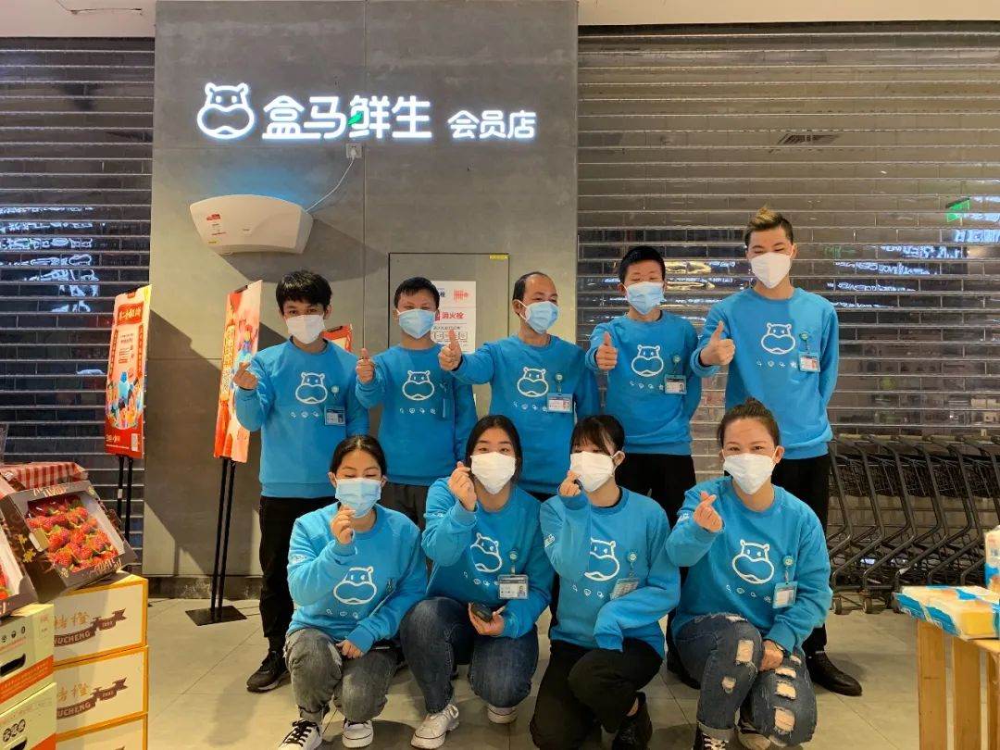

电话被打爆了！疫情下“共享员工”意外走红
原文链接 备份链接 08.02.2020本文字数：1731，阅读时长大约3分钟 导读：“先扛过这一段，再谋未来。” 作者 | 第一财经 刘佳 王海 邱智丽 “我们这里有员工符合七鲜超市的要求，不知道是否可以安排面试？”这是七鲜超市HR小 …

记者 | 刘娉婷
编辑 | 王姗姗
今年20岁的葛恒志是西贝餐饮上海森兰商都店的服务员。受到疫情的影响，从大年三十开始，西贝的堂食生意明显下滑，2月3日西贝全国400多家门店停业。葛恒志和他的二十多名同事，每天到店后的工作只剩下帮忙外卖的打包和日常培训来打发时间。
2月4日上午，门店店长召集所有员工开了一个会。“问我们是不是想要加入到盒马鲜生的共享员工的项目，可以自愿报名参加。”在此之前，葛恒志甚至都没有听说过盒马，“也是报名后去微博上了解了一下，这家生鲜超市貌似挺火的。”
第二天葛恒志就和店里同事共11个人去了盒马鲜生的金桥店。他们先是接受了一个上午的企业文化和工作流程的培训，然后办理入职手续。葛恒志被分配到后场仓库负责外卖订单的拣货工作。当时他并没有想到，这份新工作会让他每天至少要走3万步。

盒马北京红莲店云海肴员工接受上岗前培训。
在线下餐饮、酒店等服务行业受到疫情冲击而没有生意可做时，生鲜电商们却迎来了一轮业务订单量的激增。九曳供应链对《第一财经》YiMagazine透露，今年春节期间他们服务的生鲜电商客户——如每日优鲜、京东、天猫超市——需求量相比去年都上涨了300%。
生意火了，拣货员、打包员和骑手很快就不够用了。以一种短期的人员流动用工协议促成的“共享员工”，正是此次在疫情中诞生出的一种新的用工方式。
在两周多的时间里，包括餐饮、文娱、百货、商场、汽车租赁等行业的32家企业的1800多名“共享员工”加入盒马。上海地区另一家生鲜电商叮咚买菜，也通过与10多家餐饮企业的共享，收获了1000多临时工。

云海肴员工入驻盒马。
如何实现“共享”
到目前为止，共享员工的流行也不过才20天。这种在特殊时期出现的临时用工方式，“共享”形式较为灵活，还未受到任何法律层面的监管。
叮咚买菜对《第一财经》YiMagazine表示，此次叮咚和餐饮企业的合作包括两种形式，一种是B2B模式——叮咚和餐饮企业在人力、食材、供应链方面达成战略合作，人力层面的协助是其中一种短期合作，这些员工的劳务关系依然属于餐饮企业。随着疫情的发展，叮咚将灵活安排这些员工工作的天数。而第二种属于B2C模式，即叮咚直接与员工签短时雇佣合同。
盒马鲜生的共享用工模式与叮咚买菜相似。盒马鲜生位于上海浦东一家门店的店长对《第一财经》YiMagazine证实，目前门店也直接面向社会个人招聘，应聘者需拥有B类健康证和春节期间未离沪证明，薪酬为27元/每小时——略高于共享员工的时薪标准。“现在店里很缺人，只要符合这两个条件又肯吃苦的就能来。”这位店长说。
共享员工的B2B模式，并不是由零售和餐饮之间直接签订员工劳务关系转让合同，而是仍需要借助一个“第三方”来完成用工协议，因为很多餐饮企业并不具备人力资源的业务和人力资源派遣的服务业务。
蓝领公寓创业公司安歆集团旗下的创新人力资源公司扮演了这个“第三方”的角色。安歆公寓CHO沈丽华告诉《第一财经》YiMagazine，安歆公寓与叮咚买菜联合向餐饮行业发出了“共享员工”的招募倡议，2月1日正式启动餐饮行业与叮咚的共享业务。
安歆通过自己的蓝领公寓项目，本身就对接了一批劳动力密集型企业。但是刚开始，招募共享员工的沟通不理想。“餐饮员工对这种模式不熟悉，HR没有足够的话语权说服老板，所以持观望态度。盒马的共享员工合作起来后，再加上西贝老板的发言，很多老板才开始行动了。”沈丽华说。
接下来，企业方和叮咚买菜与拥有资质的安歆集团分别签订服务合同，再由安歆集团与餐饮企业之间达成人员外包的服务协议。“相当于在疫情期间，餐饮企业把他们的人包给我们，由我们输出给到叮咚买菜，”沈丽华解释说，这种模式中，给员工发放工资的环节也是由叮咚买菜先结算给安歆集团，再由安歆支付给临时用工的餐饮企业，这样做就是为了解决资金流转、税务合规等风险。
12小时夜班/每天3万步
在分配新岗位时，安歆集团会优先建议选择安排厨房员工，因为“他们对于菜品的新鲜程度非常清楚，具备分拣能力，但具体的排班和岗位分配由零售企业自主决定。”
这些“转型”后的共享员工被分配的任务，基本都是能够快速上手的工种。盒马鲜生门店的骑手团队中，并没有使用共享员工，因为做骑手就需要对周围配送的环境具备一定的熟悉程度，对配送路径要有规划经验，而这种经验并非能在短时间内完成。
24岁的安徽人李佳，原先在莆田餐厅上海七宝店做服务员。今年春节她没有回家过年，而是想趁假期餐饮业旺季，继续在店里从大年三十工作到年初三，四天时间就能拿到近千元的加班费。但是疫情打乱了李佳所有的计划。整个春节假期，餐厅关门歇业，她每天只能“躺在宿舍里，什么也做不了”。
2月5日，李佳通过餐厅报名加入叮咚买菜做共享员工。叮咚先给每个共享员工发了一份培训视频。两天后，一辆大巴将这家莆田餐厅的十几个店员送到了叮咚买菜位于上海松江的大仓。
李佳觉得这份新工作没有什么难度，只需要将橙子、苹果等按个数要求，挑拣出来包装好。她是仓库流水线操作的一部分——一份水果被包装好后，由她传递给后面一位负责称重的同事，相比于在餐厅内工作时还可以来回走动，这活儿显得有些枯燥。“以前在餐厅也是一直站着，习惯了也不感觉到累，其实有一个地方能让我赚点钱挺好的。”李佳说。
李佳的这份新工作，最开始被安排的是晚上八点上工、12小时制的夜班，次日早上8点下班后，叮咚会再用大巴车把人送回莆田餐厅的员工宿舍睡觉。连着上完三个夜班后能轮休一天，接着会再轮两天白班，仍旧是12小时。然后就是新一轮的夜班。叮咚买菜与共享员工会每周结算一次工资，每小时的薪酬为25元。很快，李佳即将获得她的第一笔共享员工的收入。

共享员工在叮咚买菜的松江大仓库里挑拣水果。
葛恒志对新工作的评价是“挺有趣的”。他在盒马负责对外卖订单的拣货，所以工作时间都是在白天。每天上午8:00一到岗，就开始拿着扫码枪在货架间来回地跑步穿梭，经过几天的适应期，他已能熟练快速地找到日用品、水果等物品具体摆放的位置。
盒马鲜生对于拣货员的工作量是按“每半小时内完成的订单数”来考核。刚入职的共享员工，要求每半小时完成8个订单的完整拣货，而盒马对老员工的考核标准是这个数字的两倍——半小时要完成17-20单。平均1分半钟要完成一单。
“这是个勤快活。我上手比较快，前两天就达到了半小时做10单，现在能完成16单。做得快会有一些激励政策。”葛恒志觉得，在盒马做拣货员，有点像过去在西贝做传菜员，“传菜员是把菜传给消费者，在盒马是把货拣好了给打包员，本质上是一样的。”但现在，他要走的路可比过去要长多了——平均每天至少要走3万步，相当于步行了20公里，而且还要小跑前进。
共享员工模式可持续吗？
从李佳到葛恒志，他们的新工作从劳动强度上，都远大于过去在餐厅的工作。很多人愿意选择以这种共享方式临时转岗，只是念及需要一份薪水养活自己。
“其实很多年轻人不愿意吃苦，可能这儿强度太大，干几天就走了，流动率还挺高。”一位盒马门店的店长对于目前这批共享员工的持久性，表示出不乐观。事实上，有些餐饮企业的员工，一听说叮咚买菜排的是夜班，还没干就选择放弃了。
当然，餐饮企业那端也有顾虑。新工作一旦薪水高、就业环境稳定，多少都会影响到自己员工的职业选择，日后不愿意再回到餐厅工作也不是没有可能。“从实际来说，这个问题的答案挺无解的。到目前为止，还没有发生员工流失的情况。”安歆集团CHO沈丽华分析说，餐饮企业中，品牌创建时间较长、老板也比较重视员工关怀和员工福利，员工在企业已经有依赖、品牌吸引力和企业忠诚度，同时零售企业和餐饮在工作内容有很大差异，“所以不排除很多员工可能还是更喜欢自己的本职工作。”
继一批生鲜电商最先启用共享员工之后，沃尔玛、永辉等线下零售卖场也纷纷尝试这种新的招工方式。但也有一些存在用工需求的零售企业仍在观望，认为“共享员工”模式还没渡过它的测试期。
为了使得共享员工获得必要的工伤保障，沈丽华的建议是雇佣共享员工的企业一方，给共享员工办理“雇主责任”保险，规避工作场所员工工伤、也给共享餐饮企业和员工更多安全保障。”沈丽华说。
叮咚买菜与共享员工签署的用工合同，时间为三个月。等疫情过去后，李佳就要回到原先的莆田餐厅工作，但她表示，未来想利用双休日继续在叮咚买菜的仓库中做分拣员。
据沈丽华透露，一些餐厅企业如今已经在内部讨论，是否能利用共享模式获得一种更为灵活的用工方式。但她同时也提醒，这种在特殊时期所形成的试验性的用工机制，在操作上需要更加重视用工流程的合规性问题。比如，以餐饮企业为例，其自身被许可的业务范畴内，其实并不具备“劳务输出”这一条。
本文版权归第一财经所有，
未经许可不得转载或翻译。

原文链接 备份链接 08.02.2020本文字数：1731，阅读时长大约3分钟 导读：“先扛过这一段，再谋未来。” 作者 | 第一财经 刘佳 王海 邱智丽 “我们这里有员工符合七鲜超市的要求，不知道是否可以安排面试？”这是七鲜超市HR小 …
原文链接 备份链接 武汉封城，阻断了外来务工者回乡团圆的计划，他们留在城内，同样面临食品供应匮乏、日常吃喝的难题。 32岁的陕西人陈静在汉口火车站从事餐饮工作。从1月26号至今，她和店里的同事、外卖骑手们免费给5家医院的医护人员，平均每 …
原文链接 备份链接 疫情蔓延令本就身处经济逆周期的中小企业雪上加霜，尽管驰援举措已开始出台，但他们企盼更大规模的政策扶持，比如减费降税 图/ IC 文 |《财经》记者 张颖馨 张威 编辑 | 袁满 “坐了一天，小鸟飞过10只，行人8人， …
原文链接 备份链接 武汉封城已经是第十天。 市民闭门不出，看上去，只要网络还通，手机还有电，大部分人的生活就能继续。 在移动互联网服务的背后，是一个个活生生的人穿梭在城市中，坚守各自的岗位，穿梭在城市中，尽量维持武汉人民生活正常运转。 过 …
原文链接 备份链接 图片来源：Unsplash 记者：柯晓斌 编辑：宋佳楠 “ 恢复正常生产可能面临疫情风险，停工则意味着巨大损失。 ” 近日，因强制武汉员工返厂工作，武汉华星光电技术有限公司（下文简称“华星光电”）被推到了风口浪尖上。 …